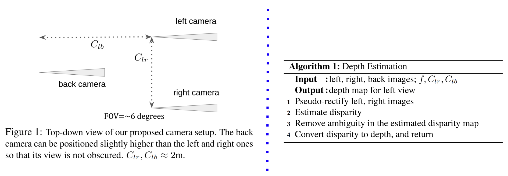

Depth Sensing Beyond LiDAR Range
Kai Zhang1, Jiaxin Xie2, Noah Snavely1, Qifeng Chen2
1Cornell Tech, Cornell University 2HKUST
Depth sensing is a critical component of autonomous driving technologies, but today's LiDAR-based or stereo-camera-based solutions have limited range. We seek to increase the maximum range of self-driving vehicles' depth perception modules for the sake of better safety. To that end, we propose a novel three-camera system that utilizes small-FOV cameras. Our system, along with our novel processing pipeline, does not require full pre-calibration and can output dense depth maps with practically acceptable accuracy for distant scenes and objects that are not well covered by most commercial LiDARs.
Paper
Our Approach
Our novel camera system consists of three small-FOV camereas that are able to zoom in distant scenes. The addition of the back camera, along with our novel depth estimation pipeline, makes it possible to address the geoemtric ambiguity, i.e., Bas-relief ambiguity, arising in the two-camera stereo setup.
Below are a snapshot of our approach. Please reference our paper for details. 
{kind=link}
Example Result
Code